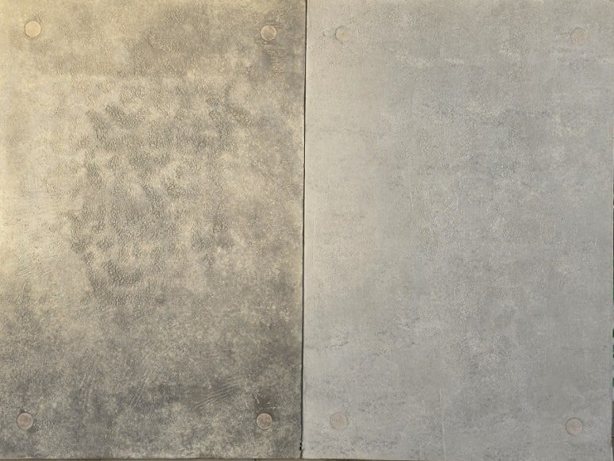

콘크리트를 케어하고,
원래의 표정을 다시 만듭니다.
Exposed Concrete Repair · Specialty Waterproofing
노출콘크리트 복원과 특수방수로 본연의 질감과 성능을 되살립니다.
About Us
콘크리트의 시간과
표정을 이해하고,
본래의 모습으로 복원합니다.
노출콘크리트는 타설 순간의 결과가 그대로 외관이 됩니다. 곰보 하나, 층조인트 한 줄이 건물 전체의 인상을 바꿉니다. 아인산업안전은 결함을 덮는 대신, 주변 면의 질감과 색을 읽어 다시 만들어 넣는 방식으로 보수합니다.
표면을 되살려도 물길이 남아 있으면 결과는 오래가지 않습니다. 그래서 면보수와 특수방수, 이 두 가지만 다룹니다. 다른 일로 넓히지 않는 대신 표면을 읽는 눈과 누수 경로를 찾는 감각을 계속 쌓습니다.

Service
콘크리트를 케어합니다.
시간과 시공의 흔적을 세심하게 복원하고, 콘크리트 본연의 질감과 성능을 되찾습니다.

Feature
자연스러운 노출콘크리트의
기준을 제시합니다.
사진만으로 판단하지 않습니다. 결함의 원인을 먼저 정리한 뒤, 왜 이 방법인지 설명할 수 있는 계획으로 시공합니다.
표면을 읽는 데 시간을 씁니다
결함부만 보지 않고 벽면 전체의 톤 범위와 질감 밀도를 먼저 기록합니다. 보수 계획은 그다음입니다.
색과 질감은 승인 후 진행
시험 도포와 건조 확인을 거쳐 승인을 받은 뒤 전면 작업에 들어갑니다. 도포 직후의 색은 진짜가 아닙니다.
누수는 경로부터 찾습니다
물이 떨어지는 지점은 대개 종착지입니다. 유입 지점을 먼저 찾고, 강우 후 재확인까지 마쳐야 시공이 끝납니다.
건축기술자의 직접 검토
결함의 원인을 먼저 정리한 뒤 공법을 제안합니다. 설명할 수 없는 시공은 하지 않습니다.
Works
시공 전 · 시공 후
보정하지 않은 실제 현장 기록입니다. 결함 상태와 그때 쓴 배합·공법을 사례마다 적어 두었습니다.


Technical
기술자료
무엇을 보고 무엇을 기준으로 판단하는지, 공정별로 공개합니다.
- 노출콘크리트노출콘크리트 곰보·기포 보수의 기본 원리표면에 남은 곰보와 기포를 단순히 메우는 것과 “다시 만드는 것”은 다릅니다. 충전재 선택부터 질감 재현까지의 기본 순서를 정리했습니다.2026.07.10
- 노출콘크리트층조인트 단차 보정과 라인 정리층조인트는 건물의 수평선을 결정합니다. 단차가 생겼을 때 갈아내야 하는 경우와 채워야 하는 경우를 구분하는 기준을 정리했습니다.2026.06.18
- 노출콘크리트색상 및 질감 재현 — 조색은 현장에서노출콘크리트의 색은 하나가 아닙니다. 같은 벽면에서도 위치에 따라 다른 톤을 읽어내는 방법과 조색 절차를 설명합니다.2026.05.27
Materials
시공에 쓰는 자재를
직접 구매하실 수 있습니다
보수재, 색상 재현 마감재, 우레탄 인젝션재, 액상고무 방수재, 침투형 발수제 — 저희가 현장에서 실제로 쓰는 자재입니다.